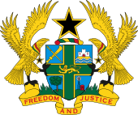
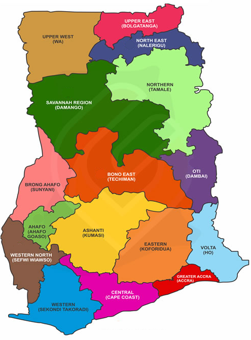

Ghana, officially the Republic of Ghana, is a country in West Africa.[9] It abuts the Gulf of Guinea and the Atlantic Ocean to the south, sharing borders with Ivory Coast in the west, Burkina Faso in the north, and Togo in the east.[10] Ghana covers an area of 238,535 km2 (92,099 sq mi), spanning diverse biomes that range from coastal savannas to tropical rainforests. With nearly 31 million inhabitants (according to 2021 census), Ghana is the second-most populous country in West Africa, after Nigeria.[11] The capital and largest city is Accra; other major cities are Kumasi, Tamale, and Sekondi-Takoradi. The first permanent state in present-day Ghana was the Bono state of the 11th century.[12] Numerous kingdoms and empires emerged over the centuries, of which the most powerful were the Kingdom of Dagbon in the north[13] and the Ashanti Empire in the south.[14] Beginning in the 15th century, the Portuguese Empire, followed by numerous other European powers, contested the area for trading rights, until the British ultimately established control of the coast by the late 19th century. Following over a century of colonisation, Ghana's current borders took shape, encompassing four separate British colonial territories: Gold Coast, Ashanti, the Northern Territories and British Togoland. These were unified as an independent dominion within the Commonwealth of Nations on 6 March 1957, becoming the first colony in West Africa to achieve sovereignty.[15][16][17] Ghana subsequently became influential in decolonisation efforts and the Pan-African movement.[18] Ghana is a multi-ethnic country with a diverse population, linguistic and religious groups;[19] while the Akan are the largest ethnic group, they constitute only a plurality. Most Ghanaians are Christians (71.3%); almost a fifth are Muslims; a tenth practise traditional faiths or report no religion.[3] Ghana is a unitary constitutional democracy led by a president who is both head of state and head of government.[20] Ghana has maintained since 1993 one of the freest and most stable governments on the continent, and it performs relatively well in healthcare, economic growth, and human development,[18] so that it has significant influence in West Africa[21] and is highly integrated in international affairs, being a member of the Non-Aligned Movement, the African Union, the Economic Community of West African States, the Group of 24, and the Commonwealth of Nations.
Most of what is now Ghana was inhabited in the Middle Ages and the Age of Discovery by different ethnic groups. The earliest known kingdoms to emerge in modern Ghana were the Mole-Dagbani states.[25] The Mole-Dagomba came on horseback from present-day Burkina Faso under a single leader, Naa Gbewaa.[26] With their advanced weapons and based on a central authority, they easily invaded and occupied the lands of the local people ruled by the tendamba (land god priests), established themselves as the rulers over the locals, and made Gambaga their capital.[27] The death of Naa Gbewaa caused civil war among his children, some of whom broke off and founded separate states including Dagbon, Mamprugu, Mossi, Nanumba and Wala.[28][29] Although the area of present-day Ghana has experienced many population movements, the Akan-speaking peoples began to move into it toward the end of the 15th century.[25][30] By the early 16th century, the Akans were firmly established in the Akan state called Bonoman, for which the Brong-Ahafo region was named.[25][31] From the 17th century, Akans emerged from what is believed to have been the Bonoman area, to create several Akan states, mainly based on gold trading.[32] These states included Bonoman (Brong-Ahafo region), Ashanti (Ashanti Region), Denkyira (Western North region), Mankessim Kingdom (Central region), and Akwamu (Eastern region).[25] By the 19th century, the territory of the southern part of Ghana was included in the Kingdom of Ashanti, one of the influential states in sub-saharan Africa prior to the onset of colonialism.[25] The government of the Ashanti Empire operated first as a loose network and eventually as a centralised kingdom with an advanced, highly specialised bureaucracy centred in the capital city of Kumasi.[25] Prior to Akan contact with Europeans, the Akan people created an advanced economy based on principally gold and gold bar commodities then traded with the states of Africa.[25][33] The Ga-Dangme and Ewe migrated westward from south-western Nigeria because of pressure from incessant tribal wars. The Ga- Dangme occupy the Greater Accra Region and parts of the Eastern Region while the Ewe are found in the Volta Region as well as the neighboring Togo and Benin.
 Page 1 Page 2